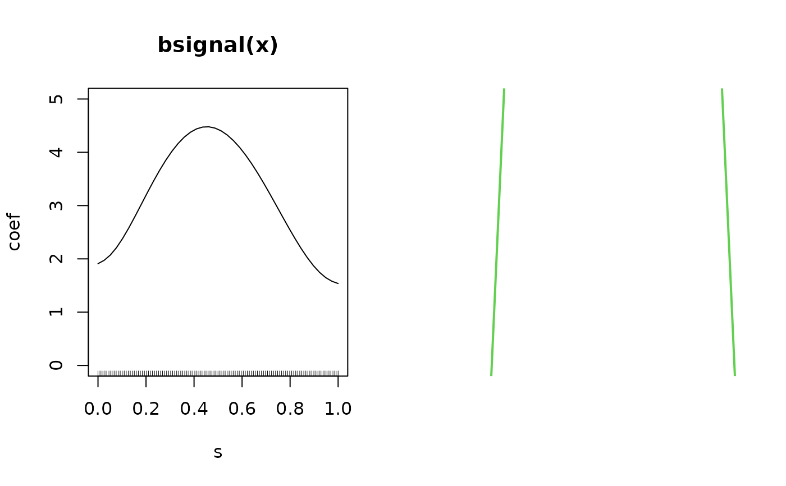
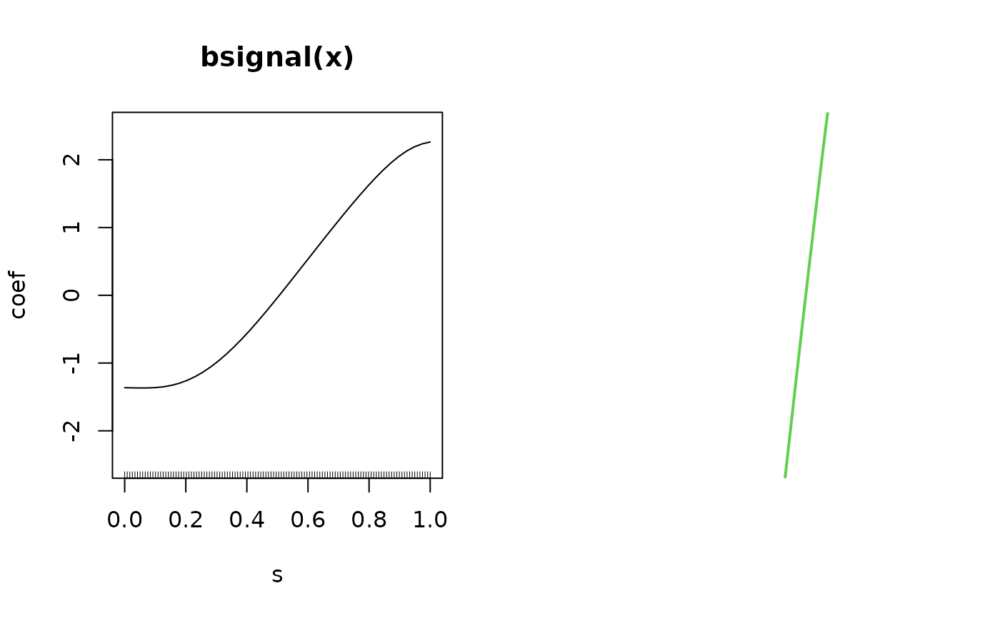

Function for fitting generalized additive models for location, scale and shape (GAMLSS) with functional data using component-wise gradient boosting, for details see Brockhaus et al. (2018).
Arguments
- formula
a symbolic description of the model to be fit. If
formulais a single formula, the same formula is used for all distribution parameters.formulacan also be a (named) list, where each list element corresponds to one distribution parameter of the GAMLSS distribution. The names must be the same as in thefamilies.- timeformula
one-sided formula for the expansion over the index of the response. For a functional response \(Y_i(t)\) typically
~bbs(t)to obtain a smooth expansion of the effects alongt. In the limiting case that \(Y_i\) is a scalar response use~bols(1), which sets up a base-learner for the scalar 1. Or you can usetimeformula=NULL, then the scalar response is treated as scalar. Analogously toformula,timeformulacan either be a one-sided formula or a named list of one-sided formulas.- data
a data frame or list containing the variables in the model.
- families
an object of class
families. It can be either one of the pre-defined distributions that come along with the packagegamboostLSSor a new distribution specified by the user (seeFamiliesfor details). Per default, the two-parametricGaussianLSSfamily is used.- control
a list of parameters controlling the algorithm. For more details see
boost_control.- weights
does not work!
- method
fitting method, currently two methods are supported:
"cyclic"(see Mayr et al., 2012) and"noncyclic"(algorithm with inner loss of Thomas et al., 2018).- ...
additional arguments passed to
FDboost, including,familyandcontrol.
Value
An object of class FDboostLSS that inherits from mboostLSS.
The FDboostLSS-object is a named list containing one list entry per distribution parameter
and some attributes. The list is named like the parameters, e.g. mu and sigma,
if the parameters mu and sigma are modeled. Each list-element is an object of class FDboost.
Details
For details on the theory of GAMLSS, see Rigby and Stasinopoulos (2005).
FDboostLSS calls FDboost to fit the distribution parameters of a GAMLSS -
a functional boosting model is fitted for each parameter of the response distribution.
In mboostLSS, details on boosting of GAMLSS based on
Mayr et al. (2012) and Thomas et al. (2018) are given.
In FDboost, details on boosting regression models with functional variables
are given (Brockhaus et al., 2015, Brockhaus et al., 2017).
References
Brockhaus, S., Scheipl, F., Hothorn, T. and Greven, S. (2015). The functional linear array model. Statistical Modelling, 15(3), 279-300.
Brockhaus, S., Melcher, M., Leisch, F. and Greven, S. (2017): Boosting flexible functional regression models with a high number of functional historical effects, Statistics and Computing, 27(4), 913-926.
Brockhaus, S., Fuest, A., Mayr, A. and Greven, S. (2018): Signal regression models for location, scale and shape with an application to stock returns. Journal of the Royal Statistical Society: Series C (Applied Statistics), 67, 665-686.
Mayr, A., Fenske, N., Hofner, B., Kneib, T. and Schmid, M. (2012): Generalized additive models for location, scale and shape for high-dimensional data - a flexible approach based on boosting. Journal of the Royal Statistical Society: Series C (Applied Statistics), 61(3), 403-427.
Rigby, R. A. and D. M. Stasinopoulos (2005): Generalized additive models for location, scale and shape (with discussion). Journal of the Royal Statistical Society: Series C (Applied Statistics), 54(3), 507-554.
Thomas, J., Mayr, A., Bischl, B., Schmid, M., Smith, A., and Hofner, B. (2018), Gradient boosting for distributional regression - faster tuning and improved variable selection via noncyclical updates. Statistics and Computing, 28, 673-687.
Stoecker, A., Brockhaus, S., Schaffer, S., von Bronk, B., Opitz, M., and Greven, S. (2019): Boosting Functional Response Models for Location, Scale and Shape with an Application to Bacterial Competition. https://arxiv.org/abs/1809.09881
See also
Note that FDboostLSS calls FDboost directly.
Examples
########### simulate Gaussian scalar-on-function data
n <- 500 ## number of observations
G <- 120 ## number of observations per functional covariate
set.seed(123) ## ensure reproducibility
z <- runif(n) ## scalar covariate
z <- z - mean(z)
s <- seq(0, 1, l=G) ## index of functional covariate
## generate functional covariate
if(require(splines)){
x <- t(replicate(n, drop(bs(s, df = 5, int = TRUE) %*% runif(5, min = -1, max = 1))))
}else{
x <- matrix(rnorm(n*G), ncol = G, nrow = n)
}
x <- scale(x, center = TRUE, scale = FALSE) ## center x per observation point
mu <- 2 + 0.5*z + (1/G*x) %*% sin(s*pi)*5 ## true functions for expectation
sigma <- exp(0.5*z - (1/G*x) %*% cos(s*pi)*2) ## for standard deviation
y <- rnorm(mean = mu, sd = sigma, n = n) ## draw respone y_i ~ N(mu_i, sigma_i)
## save data as list containing s as well
dat_list <- list(y = y, z = z, x = I(x), s = s)
## model fit with noncyclic algorithm assuming Gaussian location scale model
m_boost <- FDboostLSS(list(mu = y ~ bols(z, df = 2) + bsignal(x, s, df = 2, knots = 16),
sigma = y ~ bols(z, df = 2) + bsignal(x, s, df = 2, knots = 16)),
timeformula = NULL, data = dat_list, method = "noncyclic")
summary(m_boost)
#>
#> LSS Models fitted via Model-based Boosting
#>
#> Call:
#> FDboostLSS(formula = list(mu = y ~ bols(z, df = 2) + bsignal(x, s, df = 2, knots = 16), sigma = y ~ bols(z, df = 2) + bsignal(x, s, df = 2, knots = 16)), timeformula = NULL, data = dat_list, method = "noncyclic", families = structure(list(mu = new("boost_family", ngradient = function (y, f, w = 1) { ngr <- (1/sigma^2) * (y - f) ngr <- stabilize_ngradient(ngr, w = w, stabilization) return(ngr) }, risk = function (y, f, w = 1) { sum(w * loss(y = y, f = f, sigma = sigma)) }, offset = function (y, w) { if (!is.null(mu)) { RET <- mu } else { RET <- weighted.mean(y, w = w, na.rm = TRUE) } return(RET) }, check_y = function (y) y, weights = function (w) { switch(weights, any = TRUE, none = isTRUE(all.equal(unique(w), 1)), zeroone = isTRUE(all.equal(unique(w + abs(w - 1)), 1)), case = isTRUE(all.equal(unique(w - floor(w)), 0))) }, nuisance = function () return(NA), response = function (f) f, rclass = function (f) NA, name = "Normal distribution: mu(id link)", charloss = "-dnorm(x = y, mean = f, sd = sigma, log = TRUE) \n"), sigma = new("boost_family", ngradient = function (y, f, w = 1) { ngr <- (-1 + exp(-2 * f) * ((y - mu)^2)) ngr <- stabilize_ngradient(ngr, w = w, stabilization) return(ngr) }, risk = function (y, f, w = 1) { sum(w * loss(y = y, f = f, mu = mu)) }, offset = function (y, w) { if (!is.null(sigma)) { RET <- log(sigma) } else { RET <- log(weighted.sd(y, w = w, na.rm = TRUE)) } return(RET) }, check_y = function (y) y, weights = function (w) { switch(weights, any = TRUE, none = isTRUE(all.equal(unique(w), 1)), zeroone = isTRUE(all.equal(unique(w + abs(w - 1)), 1)), case = isTRUE(all.equal(unique(w - floor(w)), 0))) }, nuisance = function () return(NA), response = function (f) exp(f), rclass = function (f) NA, name = "Normal distribution: sigma (log link)", charloss = "-dnorm(x = y, mean = mu, sd = exp(f), log = TRUE) \n")), class = "families", qfun = function (p, mu = 0, sigma = 1, lower.tail = TRUE, log.p = FALSE) { qnorm(p = p, mean = mu, sd = sigma, lower.tail = lower.tail, log.p = log.p) }, name = "Gaussian"))
#>
#> Number of boosting iterations (mstop): mu = 54, sigma = 46
#> Step size: mu = 0.1, sigma = 0.1
#>
#> Families:
#>
#> Normal distribution: mu(id link)
#>
#> Loss function: -dnorm(x = y, mean = f, sd = sigma, log = TRUE)
#>
#>
#> Normal distribution: sigma (log link)
#>
#> Loss function: -dnorm(x = y, mean = mu, sd = exp(f), log = TRUE)
#>
#> Selection frequencies:
#> Parameter mu:
#> bsignal(x = x, s = s, knots = 16, df = 2)
#> 0.94444444
#> bols(z, df = 2)
#> 0.05555556
#> Parameter sigma:
#> bsignal(x = x, s = s, knots = 16, df = 2)
#> 0.6086957
#> bols(z, df = 2)
#> 0.3913043
# \donttest{
if(require(gamboostLSS)){
## find optimal number of boosting iterations on a grid in 1:1000
## using 5-fold bootstrap
## takes some time, easy to parallelize on Linux
set.seed(123)
cvr <- cvrisk(m_boost, folds = cv(model.weights(m_boost[[1]]), B = 5),
grid = 1:1000, trace = FALSE)
## use model at optimal stopping iterations
m_boost <- m_boost[mstop(cvr)] ## 832
## plot smooth effects of functional covariates for mu and sigma
oldpar <- par(mfrow = c(1,2))
plot(m_boost$mu, which = 2, ylim = c(0,5))
lines(s, sin(s*pi)*5, col = 3, lwd = 2)
plot(m_boost$sigma, which = 2, ylim = c(-2.5,2.5))
lines(s, -cos(s*pi)*2, col = 3, lwd = 2)
par(oldpar)
}
#> Loading required package: gamboostLSS
#> Loading required package: gamlss.dist
#>
#> Attaching package: ‘gamlss.dist’
#> The following object is masked from ‘package:mboost’:
#>
#> Family
#>
#> Attaching package: ‘gamboostLSS’
#> The following object is masked from ‘package:stats’:
#>
#> model.weights


# }